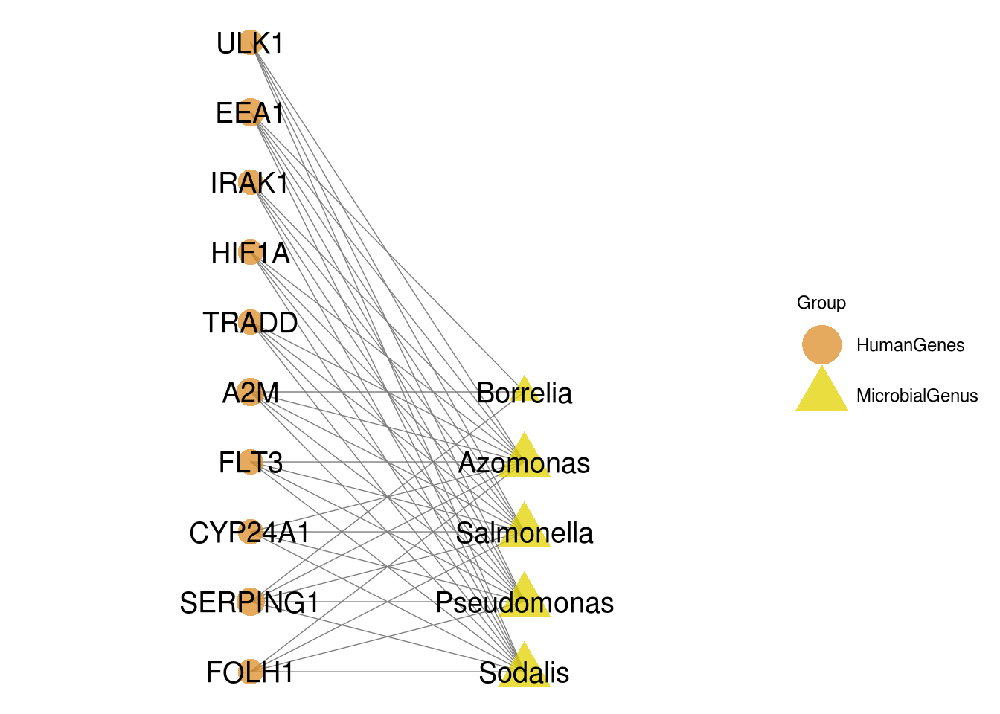

Chapter 7 MSEA
This is a markdown tutorial for MSEA. To run MSEA, you need to Install MSEA to your default python before running this template. Installation instruction: https://msea.readthedocs.io/en/latest/quickstart.html#installation.
You can run MSEA when you got genus that you’re interested in (e.g., DA genus), write all genus into one txt file, one genus per line and feed the file to MSEA as input.
7.1 Execute MSEA with python script on server
You can run MSEA analysis with MSEA_Run.py on server, one required parameters and two optional parameters need to be provided for the script:
- –input (Required), input genus list file for MSEA, one genus per line.
- –output (Optional), output csv file of MSEA result. Default testout.csv
- –PerturbationTimes (Optional), number of perturbation. Fisher’s excat test has bias on group with large number of samples, MSEA uses random sampling to remove the bias. Larger number of perturbation would cause longer runtime. Default 50.
Citation: https://www.nature.com/articles/s41598-020-78511-y
/home/tongbangzhuo/Software/miniconda3/bin/python /share/projects/SOP/Functional_Analysis/Tongbangzhuo/MSEA/MSEA_Run.py --input /share/projects/SOP/Functional_Analysis/Tongbangzhuo/MSEA/test_input --output testout.csv --PerturbationTimes 10##
## Reading database file
##
## Calculating empirical ranks for each set...
## Number of unique microbes: 566
##
0%| | 0/10 [00:00<?, ?it/s]
10%|█ | 1/10 [00:01<00:10, 1.15s/it]
20%|██ | 2/10 [00:01<00:07, 1.13it/s]
30%|███ | 3/10 [00:02<00:05, 1.29it/s]
40%|████ | 4/10 [00:03<00:04, 1.40it/s]
50%|█████ | 5/10 [00:03<00:03, 1.46it/s]
60%|██████ | 6/10 [00:04<00:02, 1.47it/s]
70%|███████ | 7/10 [00:05<00:02, 1.35it/s]
80%|████████ | 8/10 [00:05<00:01, 1.43it/s]
90%|█████████ | 9/10 [00:06<00:00, 1.39it/s]
100%|██████████| 10/10 [00:07<00:00, 1.36it/s]
100%|██████████| 10/10 [00:07<00:00, 1.34it/s]
##
## Performing MSEA with adjustment
##
## Showing the head of result table:
## oddsratio ... n_shared
## term ...
## SERPING1 90.909091 ... 5
## IFNAR1 53.333333 ... 4
## SP7 27.586207 ... 4
## XIAP 43.478261 ... 5
## IL11 40.000000 ... 3
##
## [5 rows x 7 columns]
##
## Finished !!7.2 Read in MSEA result
library(dplyr)
library(magrittr)
library(ggplot2)
library(ggbipart)
library(stringr)
library(tibble)
library(wesanderson)
MSEA_res = read.csv('/share/projects/SOP/Functional_Analysis/Tongbangzhuo/MSEA/testout.csv', sep = '\t')
head(MSEA_res, n=3)## term oddsratio pvalue qvalue zscore combined_score shared n_shared
## 1 FOLH1 160.00000 3.554225e-07 6.262868e-05 -5.371776 79.77066 ['Sodalis', 'Pseudomonas', 'Salmonella', 'Azomonas'] 4
## 2 SERPING1 90.90909 1.148926e-07 6.262868e-05 -3.721529 59.46731 ['Borrelia', 'Sodalis', 'Azomonas', 'Pseudomonas', 'Salmonella'] 5
## 3 CYP24A1 80.00000 2.714435e-06 7.609163e-05 -3.749628 48.05871 ['Sodalis', 'Pseudomonas', 'Salmonella', 'Azomonas'] 4As the table shown above, MSEA result has 8 columns:
- term, human gene names.
- oddsratio. Odds ratio (Effect size) of the association between human gene and microbial Genus.
- pvalue. p value of Fisher’s exact test.
- qvalue. q value of Fisher’s exact test. FDR Benjamini-Hochberg correction applied.
- zscore. z-score measuring the deviation in expected ranks.
- combined_score. \(c = log_{10}(p)*z\).
- shared. Genus associated with the human gene.
- n_shared. Number of genus associated with the human gene.
7.3 Filter and Visualize MSEA result
## Filter MSEA result with qvalue
MSEA_res %<>% filter(qvalue < 0.05)
## Draw bipartite with top 10 combined_score human genes
## Define data transforming function
Transform_data <- function(df){
All_Genus_in_res <- df$shared %>% unlist() %>% str_remove_all('\\[') %>% str_remove_all('\\]') %>% str_remove_all("'") %>% str_split(', ') %>% unlist() %>% unique()
lst <- list()
for (i in All_Genus_in_res){
count_vec <- c()
for (j in (1:nrow(df))){
target_string = df[j,'shared'] %>% str_remove_all('\\[') %>% str_remove_all('\\]') %>% str_remove_all("'") %>% str_split(', ') %>% unlist()
count = sum(i == target_string)
count_vec <- c(count_vec, count)
}
lst[[i]] <- count_vec
}
bipartite_tbl <- cbind(Top_MSEA_res, as.data.frame(lst)) %>% dplyr::select(term, all_of(All_Genus_in_res)) %>% column_to_rownames('term')
return(bipartite_tbl)
}
## Select top 10 human genes
Top_MSEA_res <- MSEA_res[1:10,]7.4 Draw bipartit graph to show the relation between human genes and microbial Genus with ggnet.
## Generate data for bipartit graph
bipartite_tbl <- Transform_data(Top_MSEA_res)
## Define network layout
mymat <- bipartite_tbl
coordP <- cbind(rep(2, dim(mymat)[1]), seq(1, dim(mymat)[1]) +
2)
coordA <- cbind(rep(4, dim(mymat)[2]), seq(1, dim(mymat)[2]) +
2)
mylayout <- as.matrix(rbind(coordP, coordA))
## Construct network content
test.net <- bip_init_network(mymat, mode1 = 'HumanGenes',mode2 = 'MicrobialGenus')
# Define groups of network nodes
test.net %v% "Group" = get.vertex.attribute(test.net, attrname="mode")
# Draw network
p <- GGally::ggnet2(test.net, mode = mylayout,
label = T, size = "degree", weight = 'degree',
color = 'Group', shape = 'Group',
label.size = 5, layout.exp = 1.5, alpha = 0.75) +
scale_colour_manual(values = wes_palette("FantasticFox1")) +
guides(color=guide_legend("Group")) + guides(size = "none")
p